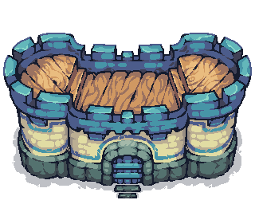
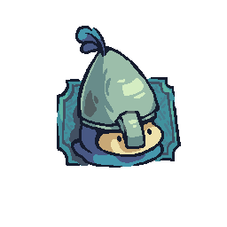
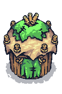

Everything you need to write about Knight's Realm — facts, words and pixels.
| Title | Knight's Realm |
|---|---|
| Genre | Real-time strategy, pixel art |
| Developer | Independent (solo/small team) |
| Engine | Godot 4 |
| Platforms | PC (Steam) · Android (Google Play) · iOS (App Store) |
| Release | TBA |
| Price | TBA |
| Website | knightsrealm.github.io |
| Press contact | contact@knightsrealm.example |
Knight's Realm is a charming pixel-art real-time strategy game. Build a village, gather wood, food and gold, recruit an army of knights — and defend it all from goblins armed with torches, exploding barrels and TNT, on islands that are freshly generated every game.
In Knight's Realm, you start with a castle, a single knight and a modest pile of resources on a procedurally generated island. Pawns are the heart of your economy: they chop forests, herd livestock, mine gold and hammer every construction site together plank by plank. Houses raise your workforce; barracks, archeries and monasteries train lancers, archers and monks; towers give garrisoned archers a commanding view of the battlefield.
But the island isn't yours alone. Goblin camps fester in the wilds — torch-wielding raiders, ambushers hiding inside explosive barrels, and dynamite-lobbing artillerists on ramshackle towers. Meanwhile, three rival castles are building armies of their own. Every match is a fresh island, a fresh layout and a fresh plan.
Click any asset to open the full-resolution original; right-click to save.

Castle sprite (PNG) General portrait (PNG)
General portrait (PNG)

Archer portrait (PNG)
Goblin house (PNG)You're welcome to use these assets and descriptions in articles, videos and streams covering Knight's Realm. Please don't use them to imply endorsement or to create look-alike products. Steam, Google Play and the App Store are trademarks of their respective owners; Knight's Realm is not affiliated with Valve, Google or Apple.